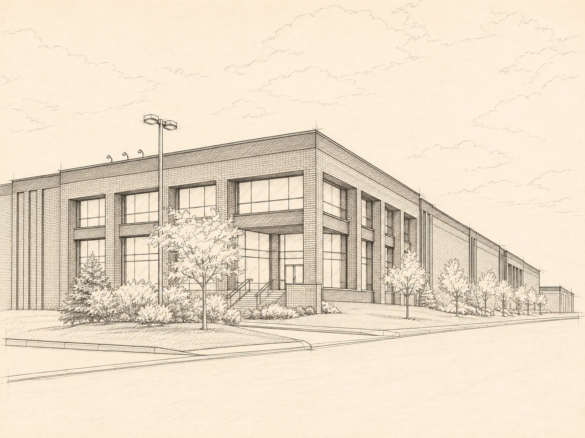
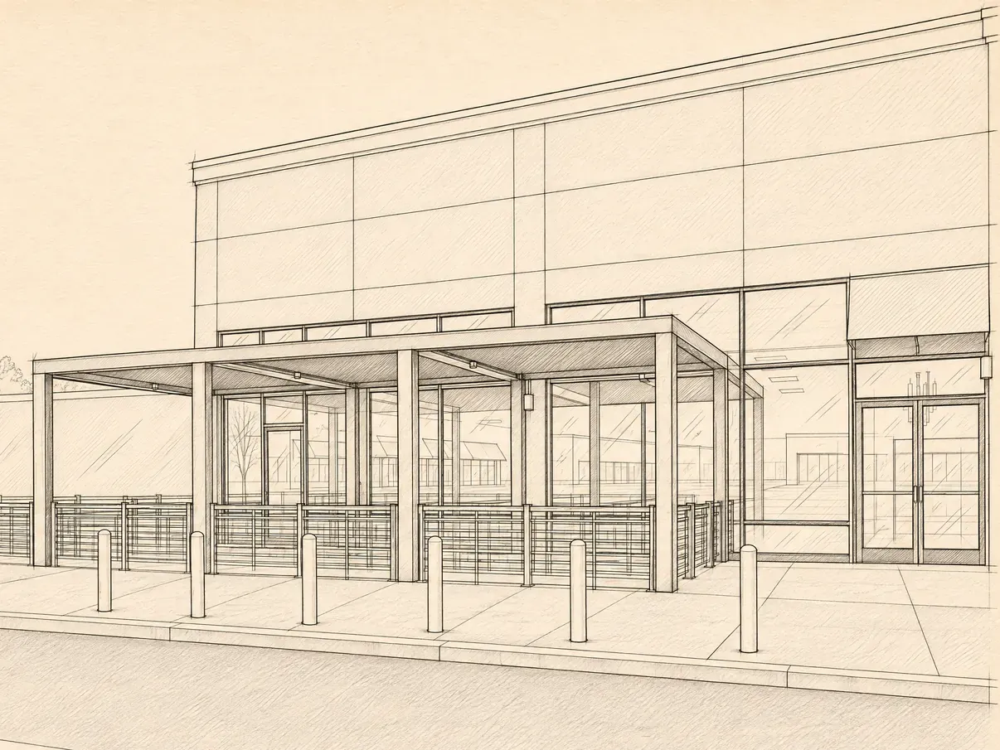
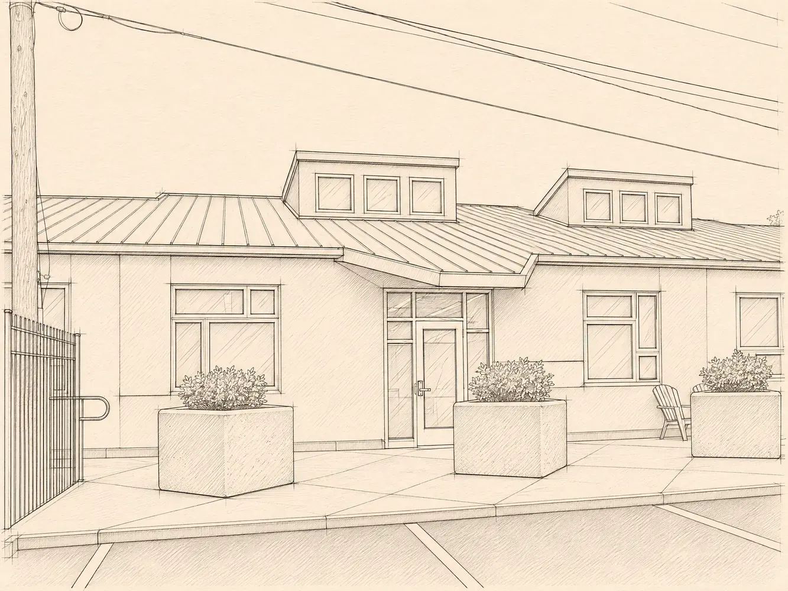
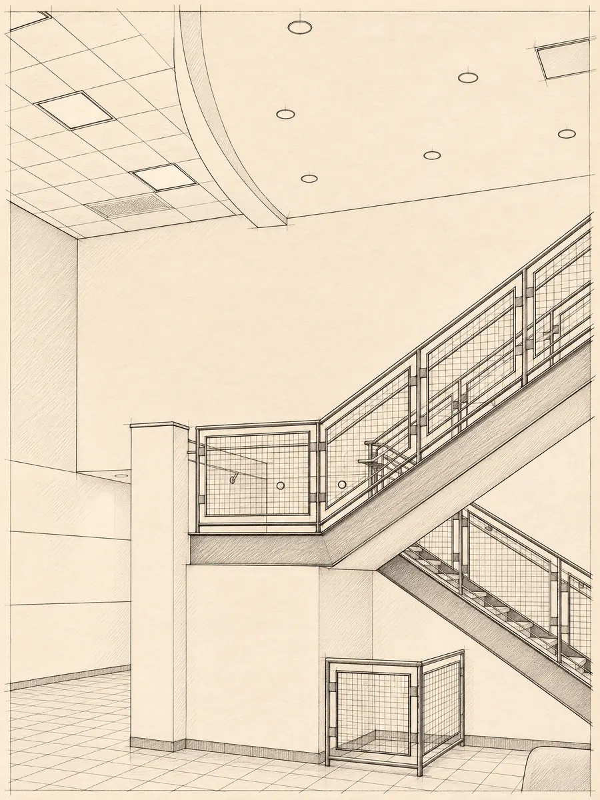

HOME PAGE PREVIEW · NOVEMBER 2026
Three directions for the new WJG home page.
Same words. Same projects. Same logo. Only the design changes, so you're judging the look and not the content. Open each one, then tell Jon which one feels like WJG.
Scroll each one all the way to the bottom. Look at it on your phone too. Each demo is a home page only, so the links inside don't go anywhere yet.
-
01
DRAWN TO BUILT
Every section is a sheet in a drawing set. Scroll, and the Brastad drawing turns into the photograph. TRY THIS Drag the handle across any project. OPEN (opens in a new tab) -
02
COMPOSITION
A dark gallery. Your buildings in black and white, with the golden ratio drawn over them in gold. TRY THIS Move over each project. The color comes back and the geometry draws in. OPEN (opens in a new tab) -
03
GET SET
The practical one. Bright, rounded cards. A visitor picks what they're building and sees the project that proves you've done it before. TRY THIS Tap the six choices under the photo. On a phone, CALL stays pinned to the bottom. OPEN (opens in a new tab)
Mixing is fine. If you like the top of one and the project section of another, say so.
FOR YOUR EYE
Please check the drawings.
The line drawings in Drawn to Built and Get Set were traced from your photos. You'll read them closer than anyone. If a line is wrong, tell Jon which one and he'll pull it.
- A-1Brastad-Knapp Residence, exterior (opens in a new tab)
-

A-2670 Belleville TurnpikeThe drawing shows entry steps that the shrubs hide in the photo. Are they right? (opens in a new tab) -

A-3Turning Point, Toms RiverThe sign is left blank on purpose. (opens in a new tab) -

A-4John O'Hara Construction offices (opens in a new tab) -

A-5SunGard CRL4-5, lobby stair (opens in a new tab)